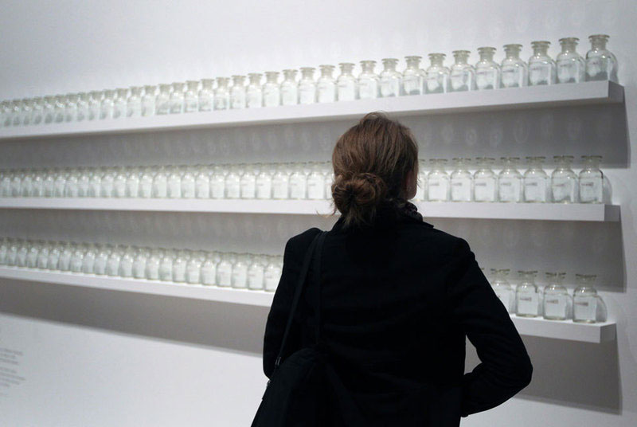
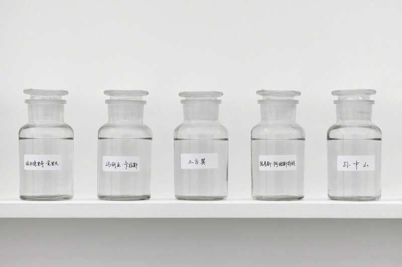
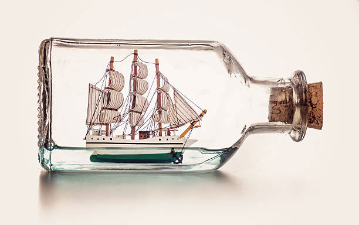
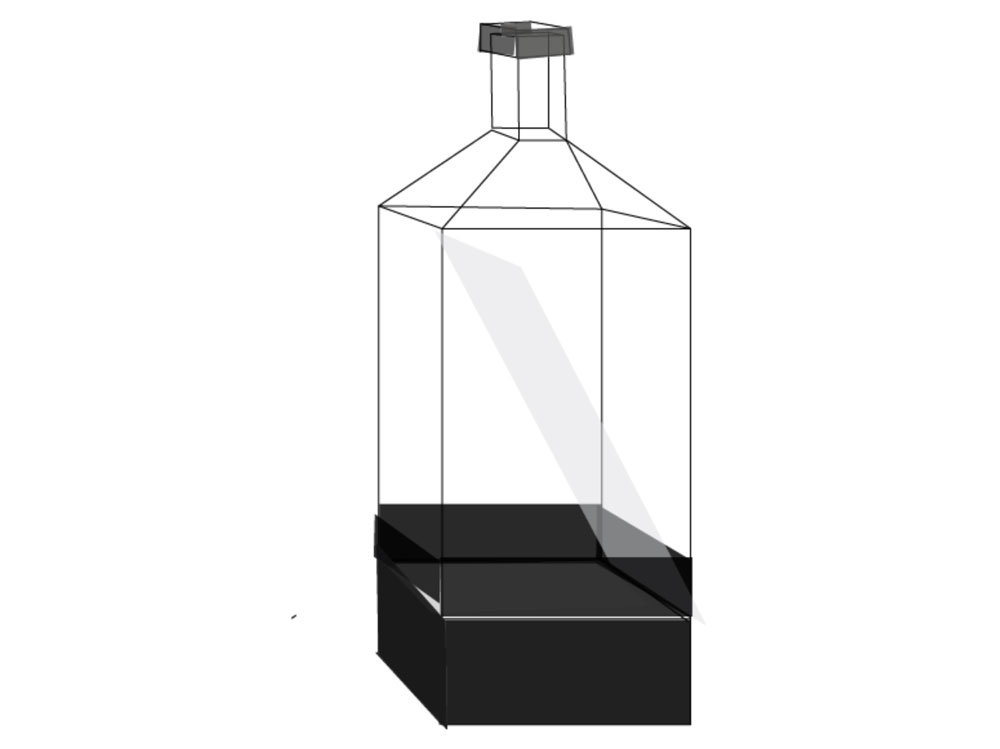
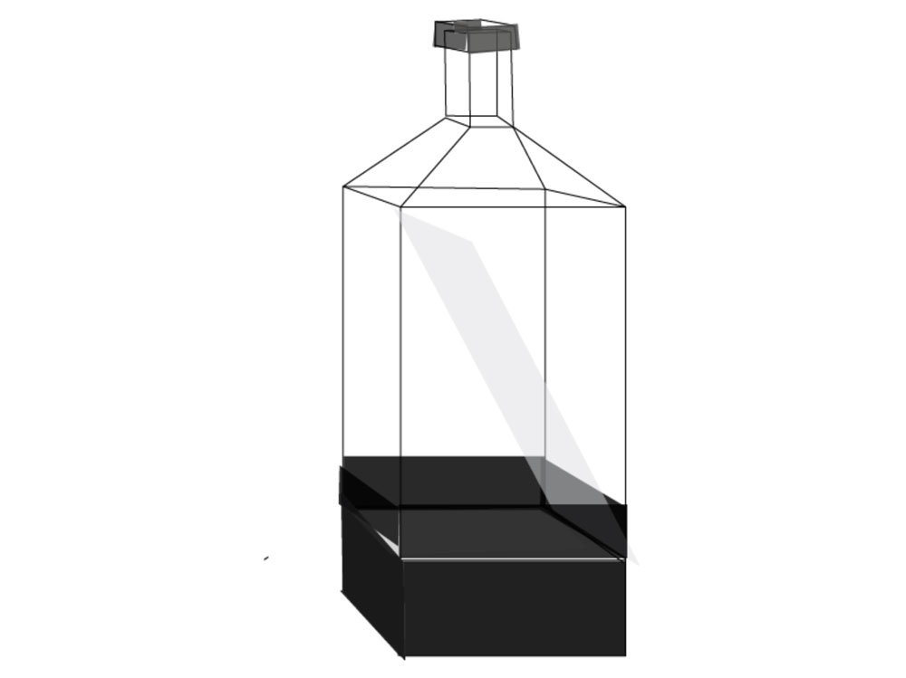

Week 6: Midterm Project Proposal
Oct 16, 2018
For the midterm project, I am working with Becca Moore. After series of discussions, we have settled on the idea of creating a physical device that displays the "trapped souls". The inspirations of this project comes from Yoko Ono's We Are All Water.


Similiar to how Ono represents people as bottles,
 
